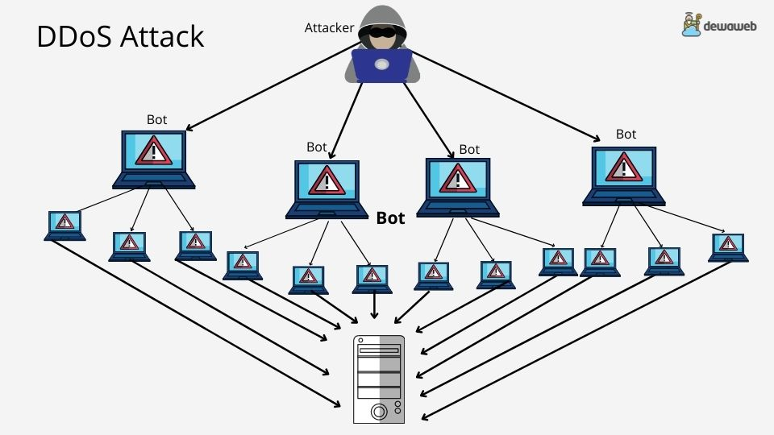

Attaque DDoS (déni de service distribué)
Une attaque DDoS (Distributed Denial of Service) vise à rendre un site, un serveur ou un service en ligne inaccessible en le submergeant d'un flot massif de requêtes provenant de milliers de machines simultanément.

Comment ça fonctionne ?
Les attaquants utilisent un réseau de machines infectées (appelé botnet) pour envoyer simultanément un volume de trafic écrasant vers une cible. Le serveur visé, incapable de traiter autant de demandes à la fois, ralentit puis tombe complètement.
Les ressources ciblées peuvent être :
- la bande passante (saturation du réseau)
- la puissance de calcul du serveur (CPU / mémoire)
- les connexions réseau (épuisement des ports ou sessions TCP)
- les applications web (couche applicative, ex. HTTP flood)
Qui peut être ciblé ?
Contrairement à ce qu'on imagine souvent, les attaques DDoS ne visent pas seulement les grandes entreprises. Elles touchent :
🏢 Entreprises & e-commerce
Pour les mettre hors ligne et causer des pertes financières directes.
🎮 Serveurs de jeux
Cible fréquente : rendre un serveur indisponible pour éliminer des adversaires.
🏛️ Services publics & médias
Attaques à motivation politique ou idéologique (hacktivisme).
👤 Particuliers (streamers, créateurs)
Ciblage d'adresses IP personnelles pour couper une connexion ou intimider.
Quels sont les impacts ?
Indisponibilité du service
Le site ou l'application devient inaccessible, parfois pendant des heures.
Perte financière
Chaque minute hors ligne peut coûter très cher (ventes perdues, pénalités…).
Atteinte à la réputation
Les utilisateurs perdent confiance en un service régulièrement indisponible.
Diversion pour une autre attaque
Le DDoS peut servir de leurre pendant qu'une intrusion discrète est réalisée.
⚠️ Comment reconnaître une attaque DDoS ?
- Ralentissement soudain et inexpliqué d'un site ou service.
- Indisponibilité totale alors que le serveur semblait fonctionner.
- Pics de trafic anormaux visibles dans les logs réseau.
- Nombreuses requêtes provenant des mêmes plages d'adresses IP.
- Messages d'erreur 503 (Service Unavailable) en masse.
Que faire si vous êtes victime ?
- Contacter votre hébergeur ou FAI immédiatement : ils peuvent filtrer ou bloquer le trafic malveillant à leur niveau.
- Activer un service anti-DDoS (Cloudflare, OVH anti-DDoS, Akamai…) si ce n'est pas déjà fait.
- Bloquer les IP suspectes via votre pare-feu ou tableau de bord hébergeur.
- Documenter l'attaque (logs, captures, horodatages) pour un dépôt de plainte éventuel.
- Signaler l'incident sur cybermalveillance.gouv.fr pour obtenir de l'aide.
Se protéger d'une attaque DDoS
Protection anti-DDoS
Activez un service dédié (Cloudflare, OVH anti-DDoS…) pour filtrer le trafic malveillant automatiquement.
Pare-feu applicatif (WAF)
Configurez un WAF pour bloquer les requêtes anormales avant qu'elles n'atteignent votre serveur.
CDN & Rate limiting
Utilisez un CDN pour absorber les pics et limitez le taux de requêtes sur vos APIs et formulaires.
Masquer son IP
Si vous êtes particulier ou streamer, cachez votre IP réelle derrière un VPN ou un proxy dédié.
Le saviez-vous ?
Les attaques DDoS sont devenues accessibles à tous : il existe des services illégaux appelés "booters" ou "stressers" qui permettent de louer une attaque pour quelques euros seulement. Participer à une telle attaque ou en commander une est un délit pénal en France, passible de 5 ans d'emprisonnement et 150 000 € d'amende (article 323-2 du Code pénal).
En 2023, l'ANSSI a observé une multiplication des attaques DDoS contre des cibles françaises, notamment des hôpitaux, des administrations et des médias, souvent revendiquées par des groupes hacktivistes.
Sources & crédits
- Contenu : basé sur les recommandations de l'ANSSI et de Cybermalveillance.gouv.fr
- Référence légale : Article 323-2 du Code pénal (atteinte aux systèmes de traitement automatisé de données)
- Image : à remplacer par une illustration libre / ta propre illustration
Site pédagogique non affilié à Cybermalveillance.gouv.fr ni à l'ANSSI. Les contenus restent la propriété de leurs auteurs.